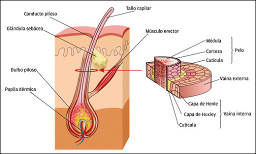

Índice de contenidos
- 1. La piel
- 2. Extensión y espesor
- 3. Eminencias, surcos y orificios
- 4. Zonas de la piel
- 4.1. Epidermis
- 4.2. Dermis
- 4.3. Hipodermis
- 5. Papilas dérmicas
- 6. Anexos de la piel
- 7. Material adicional
LA PIEL
La piel o tegumento es un órgano en forma de membrana que recubre toda la superficie del cuerpo. Protegiéndolo de la acción de numerosos factores externos, como también de la acción de los gérmenes. Los gérmenes no penetran a través de la piel, si está integra. Solo penetran por las heridas en su superficie. Contiene numerosos receptores con terminaciones nerviosas adaptadas para recibir diversos estímulos, que producen sensaciones táctiles, térmicas o dolorosas. La piel posee una permeabilidad selectiva eso quiere decir que es casi impermeable, permitiendo al individuo la inmersión en el agua dulce o salada, sin que su cuerpo absorba o elimine agua a través de ella. Es en cambio permeable para algunas sustancias. Puede absorber determinados productos químicos, que luego se incorporan a la sangre. Esto es beneficioso para la aplicación externa de algunos medicamentos, pero puede ser perjudicial para quienes trabajan con productos químicos nocivos, de fácil absorción cutánea. Cuando tiene pigmentación, protege al cuerpo de la acción de la luz. Actúa también como regularizadora de la temperatura del individuo, aislándolo del frío o facilitando la pérdida de calor en los ambientes cálidos.
EXTENSIÓN Y ESPESOR
Su extensión es superior a la superficie del cuerpo que recubre, debido a numerosos repliegues que aumentan su recorrido. Su espesor varía según los individuos y según la región del cuerpo. Las regiones donde alcanza mayor espesor son las palmas de las manos y, preferentemente, las plantas de los pies. Su color es blanco rosado en el recién nacido; blanco en el niño y en el adolescente; blanco más oscuro en el adulto y casi amarillento en la senectud. La coloración varía según las regiones en que habite el individuo, o según la raza a la que pertenezca.
EMINENCIAS, SURCOS Y ORIFICIOS
La piel no es lisa. Se observan en su superficie, eminencias, surcos y orificios.
Las eminencias son producidas por elevaciones denominadas papilas o crestas dérmicas.
Los dibujos que esas eminencias forman en las manos sobre todo en las extremidades de los dedos son distintos en cada individuo.
Recordemos la importancia universal de estos dibujos, para la individualización dactiloscópica de las personas.
Los surcos son los espacios limitados por papilas, surcos inter-papilares, los producidos por la inserción de músculos cutáneos, surcos de la frente y de la cara; los que forman en las articulaciones, pliegues del codo y de la ingle y los que se originan en la vejez o senectud, pliegues seniles.
Los orificios corresponden a la desembocadura de glándulas sudoríparas y sebáceas, y a los folículos en que se implantan los pelos.
LAS ZONAS DE LA PIEL
La piel consta de tres zonas: una superficial, la epidermis, otra media, la dermis y una profunda que es la hipodermis.
EPIDERMIS
La epidermis está formada por tejido epitelial estratificado. Carece de vasos sanguíneos como todos los epitelios. Se le considera una cara externa, en relación con el exterior, y una cara interna, que descansa sobre la dermis. A partir de esta cara y hacia la superficie se le describen cinco capas o estratos celulares, que son:
Estrato Germinativo
El estrato germinativo o basilar limita con la dermis. Está formado por una capa de células cilíndricas, que contienen melanina. La melanina es un pigmento que le da color.
La función del estrato germinativo es originar constantemente células. Estas células experimentan modificaciones y van integrando sucesivamente los otros estratos, hasta constituir el estrato córneo, donde caen por descamación.
Estrato Espinoso
El estrato espinoso o de Malpighi está formado por varias capas de células, irregularmente poliédricas y de contorno espinoso; de ahí el nombre del estrato.
Estrato Granuloso
El estrato granuloso está integrado por varias capas celulares que provienen del estrato anterior. A nivel de esta capa, mueren las células de la epidermis.
Estrato Lúcido
El estrato lúcido o transparente o transparente está constituido por células muertas, aplanadas.
Es una capa delgada, transparente y homogénea.
Estrato Córneo
El estrato córneo es la capa más externa de la epidermis. Sus células (células muertas). Tienen el aspecto de escamas córneas. Estas escamas son eliminadas por descamación.
DERMIS
La dermis es la segunda capa de la piel. Está situada por debajo de la epidermis.
Descansa sobre el tejido celular subcutáneo o hipodermis. La integran dos capas:
- La capa superficial o papilar
- La capa profunda de reticular
En la dermis, además de las papilas, se encuentran corpúsculos receptores de estímulos, vasos sanguíneos, músculos erectores de los pelos, glándulas, etc.
HIPODERMIS
En esta capa encontramos abundante circulación sanguínea (venas, arterias).
Abundante circulación linfática y el nacimiento de la mayor cantidad de glándulas sudorales, que desembocan en forma directa en la piel.
PAPILAS DÉRMICAS
Las papilas o crestas dérmicas son elevaciones muy numerosas de la capa superficial de la dermis. Se encuentran distribuidas por todo el cuerpo.
En su interior se alojan vasos sanguíneos o corpúsculos receptores, denominándose papilas vasculares o papilas nerviosas, respectivamente.
ANEXOS DE LA PIEL
Pelos, Uñas, Glándulas
Se consideran como anexos de la piel a las glándulas sudoríparas y sebáceas, a los pelos y a las uñas.
Las glándulas sudoríparas, son muy numerosas, tienen el aspecto de un largo tubo. Su extremidad profunda –cerrada a la manera de un dedo de guante- se pliega formando una especie de ovillo: el glomérulo. Su extremidad superficial, después de espiralarse, se abre en la superficie de la piel donde elimina el sudor. Su función es la de intervenir en la regulación de la temperatura y en la
Las glándulas sebáceas son glándulas arracimadas que eliminan su producto en los folículos pilosos o a veces directamente en la piel. Su función es producir sebo con el que lubrican los pelos y la superficie del cuerpo.
Las uñas son formaciones laminares córneas de crecimiento continuo. Se les describen tres partes: una raíz, un cuerpo y una extremidad libre. La raíz está
por debajo de un repliegue cutáneo, en contacto con la dermis de la que depende su crecimiento. El cuerpo presenta dos caras: una cóncava en relación con la dermis y otra convexa, de coloración rosada.

Los pelos son prolongaciones cilíndricas que emergen de cavidades tubulosas de la piel: los folículos pilosos. El pelo consta dedos partes: una raíz y un
tallo. La raíz o bulbo está dentro delfolículo piloso. El tallo es la region que sobresale de la piel. Los pelos pueden ponerse rígidos por la acción de los músculos erectores.